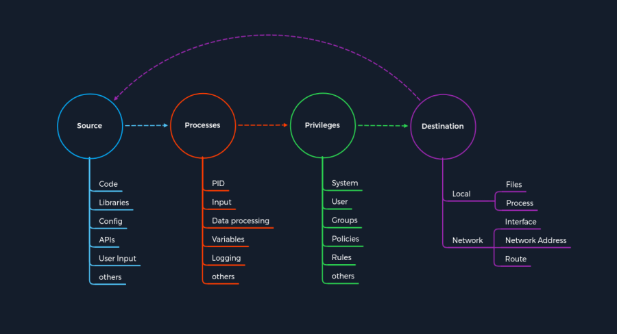

- Structure to Identify an Attack for different Services using a pattern
Structure to Identify an Attack for different Services using a patternSource
Source as a source of information used for the specific task of a
process.
There are many different ways to pass information to a process.
These are the most common Information Sources passed to the
processes:
◇
Code → This means that the already executed program code results are used as a source of information. These can come from different functions of a program
◇
Libraries → A library is a collection of program resources, including configuration data, documentation, help data, message templates, prebuilt code and subroutines, classes, values, or type specifications.
◇
Config → Configurations are usually static or prescribed values that determine how the process processes information.
◇
APIs → The application programming interface (API) is mainly used as the interface of programs for retrieving or providing information.
◇
User Input → If a program has a function that allows the user to enter specific values used to process the information accordingly, this is the manual entry of information by a person.
◇ ...
Log4j vulnerability (CVE-2021-4428): an attacker can manipulate the HTTP User-Agent header and insert a JNDI lookup as a command intended for the Log4j library.
Processes
The
Process is about processing the information forwarded from the
source.
The informations forwarded from the
source are processed according to the intended task determined by the program code.
For each task, the developer specifies how the information is processed.
Process Components:
◇
PID → The Process-ID (PID) identifies the process being started or is already running. Running processes have already assigned privileges, and new ones are started accordingly.
◇
Input → This refers to the input of information that could be assigned by a user or as a result of a programmed function
◇
Data Processing → The hard-coded functions of a program dictate how the information received is processed
◇
Variables → The variables are used as placeholders for information that different functions can further process during the task.
◇
Logging → During logging, certain events are documented and, in most cases, stored in a register or a file. This means that certain information remains in the system.
Log4j vulnerability (CVE-2021-4428): the process of Log4j is to log the User-Agent as a string using a function and store it in the designated location.
The vulnerability in this process is the misinterpretation of the string, which leads to the execution of a request instead of logging the events
Privileges
Privileges are present in any system that controls processes.
The
Privileges serve as a type of permission that determines what tasks and actions can be performed on the system.
We can divide these
privileges into the following areas:
◇
System → These privileges are the highest privileges that can be obtained, which allow any system modification. In Windows, this type of privilege is called SYSTEM, and in Linux, it is called root.
◇
User → User privileges are permissions that have been assigned to a specific user. For security reasons, separate users are often set up for particular services during the installation of Linux distributions.
◇
Groups → Groups are a categorization of at least one user who has certain permissions to perform specific actions.
◇
Policies → Policies determine the execution of application-specific commands, which can also apply to individual or grouped users and their actions.
◇
Rules → Rules are the permissions to perform actions handled from within the applications themselves
Log4j vulnerability (CVE-2021-4428): The vulnerability in the privileges was that most applications with the Log4j implementation were run with the privileges of an administrator.
Destination
Every task has at least one purpose and goal that must be fulfilled.
The result of such a task is either stored somewhere or forwarded to another processing point.
Such processing points can point either to:
•
Local Destination → The local area is the system's environment in which the process occurred. Therefore, the results and outcomes of a task are either processed further by a process that includes changes to data sets or storage of the data.
•
Network Destination → The network area is mainly a matter of forwarding the results of a process to a remote interface. This can be an IP address and its services or even entire networks. The results of such processes can also influence the route under certain circumstances
Log4j vulnerability (CVE-2021-4428): The misinterpretation of the User-Agent leads to a JNDI lookup which is executed as a command from the system with administrator privileges and queries a r
emote server controlled by the attacker, which in our case is the Destination in our concept of attacks
Log4j Vulnerability explained with the above pattern template
1. Initiation of the Attack
| Step | Log4j | Concept of Attacks - Category |
|---|
| 1. | The attacker manipulates the user agent with a JNDI lookup command. | Source |
| 2. | The process misinterprets the assigned user agent, leading to the execution of the command. | Process |
| 3. | The JNDI lookup command is executed with administrator privileges due to logging permissions. | Privileges |
| 4. | This JNDI lookup command points to the server created and prepared by the attacker, which contains a malicious Java class containing commands designed by the attacker. | Destination |
This is when the cycle starts all over again, but this time to gain remote access to the target system
.2. Trigger Remote Code Execution
| Step | Log4j | Concept of Attacks - Category |
|---|
| 5. | After the malicious Java class is retrieved from the attacker's server, it is used as a source for further actions in the following process. | Source |
| 6. | Next, the malicious code of the Java class is read in, which in many cases has led to remote access to the system. | Process |
| 7. | The malicious code is executed with administrator privileges due to logging permissions. | Privileges |
| 8. | The code leads back over the network to the attacker with the functions that allow the attacker to control the system remotely. | Destination |
Bibliography:•
https://academy.hackthebox.com/